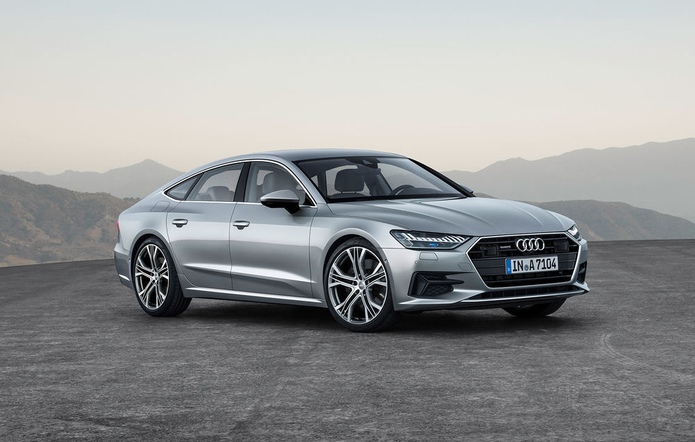
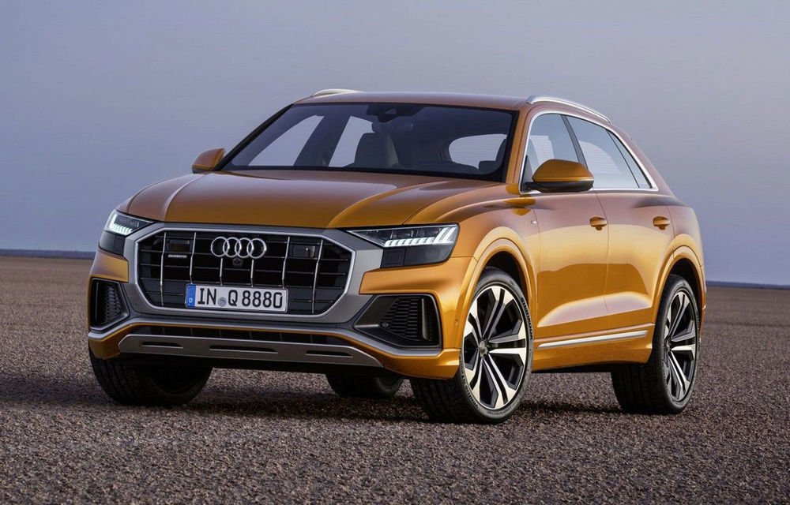

Main Content

A Models
Inconfundabil și distins: A7. De la blocurile optice care sunt acum și mai tăioase și au o semnătură luminoasă mai individualizată, la partea din față verticală, cu grila Audi Singleframe lată, la silueta de coupe și până la partea din spate sculpturală: A7 Sportback este ambasadorul unui limbaj revoluționar de design, etalându-și totodată cu mândrie gena quattro. Design de coupe, spațiu de limuzină și variabilitate de Avant: Audi A7 Sportback îmbină sinergic calitățile ideale din trei categorii auto diferite, fiind astfel însoțitorul optim pentru business dar și pentru timpul liber.

Q Models
Tehnologii de infotainment de ultimă oră și sisteme de asistență a șoferului, senzații de neuitat la volan, datorită tracțiunii integrale quattro, plus soluții inteligente pentru șasiu, design plin de forță și spațiu din plin pentru până la șapte persoane. Doamnelor și domnilor: Audi Q7.Datorită tehnologiei inovatoare de infotainment, ce permite utilizarea extrem de intuitivă, vă puteți continua cotidianul digital și atunci când urcați la bordul mașinii. Astfel, direct în fața dumneavoastră, va trona Audi virtual cockpit. Pe display-ul de înaltă rezoluție cu diagonala de 12,3 inchi, panoul complet digitalizat de instrumente vă oferă informații despre automobil, ca de exemplu, viteza și turația.

R Models
R8 întruchipează esența a tot ceea ce însemnă motorsport și exclusivitate. R8 Coupé V10 quattro este Audi în formă pură. La cel mai înalt nivel.Liniile orizontale adânci accentuează înălțimea redusă și sportivitatea modelului Audi R8 Coupé V10 quattro. Profilul este dominat de blade-urile caracteristice, iar partea din spate asigură o încheiere spectaculoasă, compusă din difuzorul sport, grilele prizelor de aer, plus noile terminații ovale ale sistemului de evacuare. Jantele de 19 inchi incluse în dotarea standard pot fi înlocuite opțional cu noile jante de 20 de inchi cu design în V și cu trei variante diferite de finisaj.

TT Modelsn
Simțiți puterea pură, savurați senzațiile condusului sportiv și bucurați-vă de fiecare dată din nou de designul interior și exterior atractiv prin care se distinge Audi TTS Coupé. Atât când accelerați în forță, cât și atunci când abordați virajele cu viteză mai mare, dar și când frânați: scaunele sport S cu emblema S vă oferă suportul necesar condusului dinamic și sunt incluse în dotarea standard. Volanul sport TTS multifuncțional plus cu cusături decorative contrastante este plăcut la atingere și vă oferă totodată condițiile optime pentru a putea struni mașina aceasta puternică. Iar celor care își doresc ceva chiar și mai special, le oferim "TTS competition".